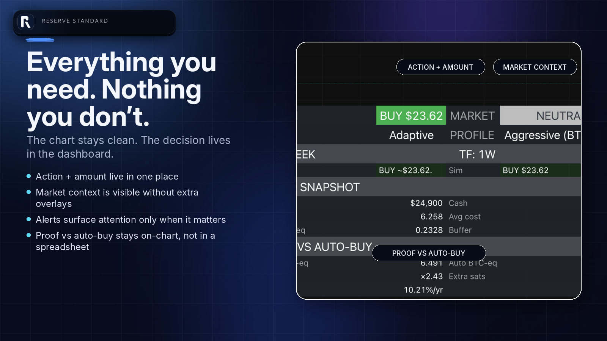
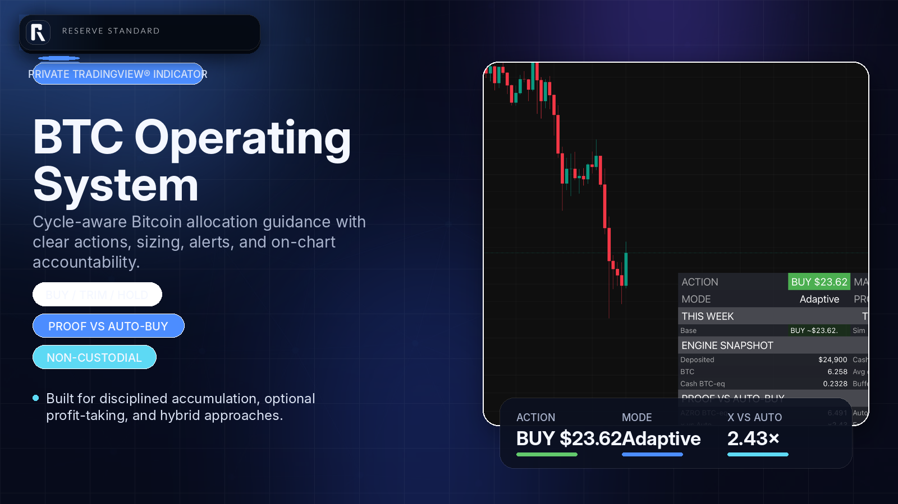

Operating cash
Keeps payroll, vendors, taxes, rent, and working capital moving.
Reserve Standard helps owner-operators separate operating cash from long-run reserve, preserve liquidity, and follow one repeatable weekly reserve process.
Built for founder-led businesses with stable cash flow, a real operating buffer, and a long-horizon reserve mandate.
Educational materials only. Not financial, tax, legal, or accounting advice.

Once the month is covered, extra cash still needs a job. Mixing every dollar together usually protects the short-term jobs while quietly weakening the long-term one.
Keeps payroll, vendors, taxes, rent, and working capital moving.
Buys time when revenue softens or something breaks.
Stays ready for clear, high-conviction moves inside the business.
Should carry stored business energy forward instead of slowly weakening.
Near-term liquidity and long-term reserve should not be held to the same standard. Cash handles access. Reserve capital needs a form that does not quietly dilute away.
Right for near-term obligations. Weak for true reserve once the short-term job is done.
Useful in other contexts, but still paper claims with management and market risk layered in.
Closer to reserve logic, but heavier to move, divide, verify, custody, and settle cleanly.
Direct digital property with fixed supply, portability, liquidity, and lower impairment for the reserve job.
Bitcoin may solve the reserve asset question. The operating question is different: how to protect the business, keep ready cash ready, and stay consistent when volatility shows up.
Map cash by job, identify the real reserve bucket, and define the company’s operating constraints.
Set budget rules, liquidity guardrails, approvals, and custody decisions before any weekly workflow begins.
Turn noise into one clear action and amount the business can review, execute, log, and move on from.

Serious buyers do not need more hype. They need a reserve process they can open, inspect, repeat, and defend.
The reserve process lives in a maintained interface with alerts and a stable weekly workflow.
The system is designed to be judged against a simple fixed weekly buy using the same modeled cashflows.
Buffer rules, liquidity rules, documentation, and change control keep the process durable.
Historical illustrations are educational only. No outcomes are promised.

The design assumes protected operating cash first, preserved opportunity capital, conservative sizing, no leverage, and a long horizon. It is meant to make reserve policy calmer, not more chaotic.
No. Reserve Standard is designed for reserve building. Optional trims can exist inside written guardrails for real liquidity needs, but the operating idea is long-horizon reserve construction.
No. The design assumes protected operating cash first, preserved opportunity capital, conservative sizing, and a real buffer before reserve capital is put to work.
That can work in some contexts, but it does not solve the business problem of liquidity discipline, policy guardrails, proof, or advisor-facing governance. Reserve Standard is built to keep the process operationally durable.
Volatility is real. The point is not to deny that. The point is to structure the business so a market move does not endanger operations or force a panicked rewrite of the plan.
No. Businesses choose their own exchange, custody, approvals, and advisors. Reserve Standard provides the reserve process, policy layer, and implementation support around it.
If there is fit, the next step is implementation: policy, liquidity guardrails, workflow setup, and a weekly reserve cadence the company can actually keep.
Share the basics: the business, reserve budget range, and the main constraint you want to solve. The form opens a draft email so you can review it before sending.
Stable cash flow, a real operating buffer, and a clear reason to treat reserve capital more intentionally.
If there is fit, the next step is the Reserve Review followed by policy design and implementation.